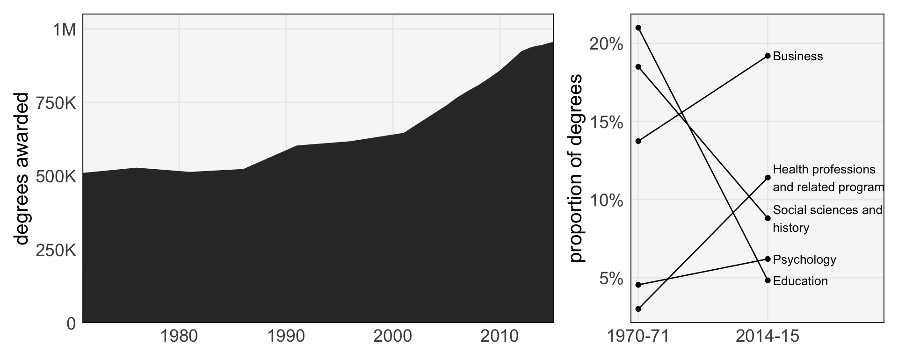

── Attaching core tidyverse packages ──────────────────────── tidyverse 2.0.0 ──
✔ dplyr 1.1.4 ✔ readr 2.1.5
✔ forcats 1.0.0 ✔ stringr 1.5.1
✔ ggplot2 3.5.2 ✔ tibble 3.3.0
✔ lubridate 1.9.4 ✔ tidyr 1.3.1
✔ purrr 1.1.0
── Conflicts ────────────────────────────────────────── tidyverse_conflicts() ──
✖ dplyr::filter() masks stats::filter()
✖ dplyr::lag() masks stats::lag()
ℹ Use the conflicted package (<http://conflicted.r-lib.org/>) to force all conflicts to become errors
Warning: The `size` argument of `element_rect()` is deprecated as of ggplot2 3.4.0.
ℹ Please use the `linewidth` argument instead.
Reading, Recording, Rmarkdown
Faceting is useful whenever we want different rows of the data to appear in different panels. What if we want to compare different columns, or work with several datasets? A more general alternative is to use compound plots. The idea is to construct plots separately and then combine them only at the very end.
The main advantage of compound plots is that individual panels can be tailored to specific visual comparisons, but relationships across panels can also be studied. For example, the plot below shows change in the total number and composition of undergraduate majors over the last few decades. In principle, the same information could be communicated using a stacked area plot (geom_area). However, comparing the percentages for 1970 and 2015 is much more straightforward using a line plot, and we can still see changes in the overall number of degrees using the area plot.
::: {.cell} ::: {.cell-output-display}  ::: :::
For reference, here is a non-compound display of the same information.
::: {.cell} ::: {.cell-output-display}  ::: :::
::: :::
There are a few considerations that can substantially improve the quality of a compound plot,
- Consistent visual encodings for shared variables
- Clear, but unobtrusive annotation
- Proper alignment in figure baselines
We will discuss each point separately.
The figures below are compound plots of a dataset of athlete physiology. They are very similar, but the second is better because it enforces a more strict consistency in encodings across panels. Specifically, the male / female variable is (1) encoded using the same color scheme across all panels and (2) ordered so that female repeatedly appears on the right of male.
::: {.cell} ::: {.cell-output-display}  ::: :::
::: :::
The improved, visually consistent approach is given below.
::: {.cell} ::: {.cell-output-display}  ::: :::
::: :::
Effective annotation can be used to refer to different subpanels of the data without drawing too much attention to itself. Labels should be visible but subtle – not too large, similar fonts as the figures, and logically ordered ((a) on top left). A nice heuristic is to think of these annotations like page numbers. They are useful for making references, but aren’t something that is actively read.
::: {.cell} ::: {.cell-output-display}  ::: :::
::: :::
For alignment, we will want figure baselines / borders to be consistent. Misalignment can be distracting. This is primarily a problem when compound plots are made from manually. If we follow the programmatic approaches discussed in the next lecture, we won’t have this issue.
::: {.cell} ::: {.cell-output-display}  ::: :::
::: :::